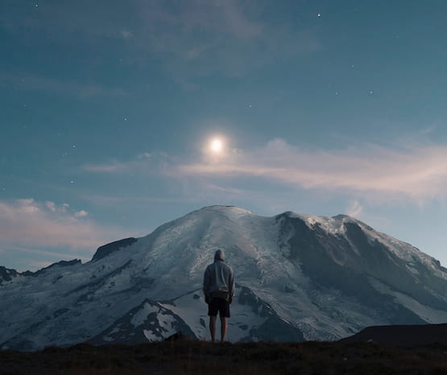
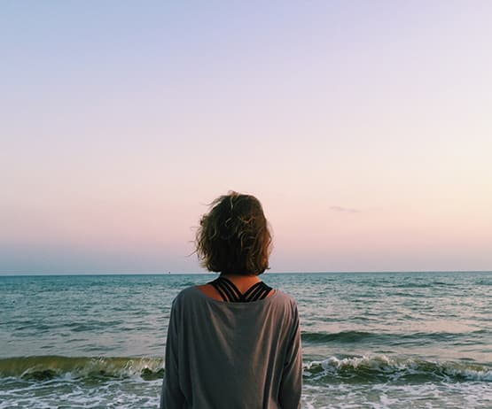

Лес — экологическая система, биоценоз,
в которой главной жизненной формой являются деревья.
Лес — составная часть природы, понятие
«лес» можно рассматривать на разных
уровнях. В глобальном масштабе — это часть
биосферы, в локальном — это может быть
насаждение. Леса занимают около трети площади суши.

Поеду в горы
Горные системы занимают 64 % поверхности Азии,
36 % — Северной Америки,
25 % — Европы, 22 % — Южной
Америки, 17 % — Австралии
и 3 % — Африки. В целом 24 %
земной поверхности приходится на горы. 10 %
всех людей живёт на территории гор. В горах берёт
своё начало большинство рек Земли.

Поеду на Чёрное море
Я уплыву туда, где ни разу я не был,
туда, где никто раньше не был. Никто и никогда
раньше не был, я уплыву. Я позову тебя
смотреть на синее небо и пить по капле синее
небо, и падать в это синее небо, я позову.
Уеду я на Чёрное-Чёрное море,
на Чёрное-Чёрное море, на Чёрное-Чёрное море
уеду я. Уеду я на Чёрное-Чёрное море,
на Чёрное-Чёрное море, на Чёрное-Чёрное море.
Уеду я.
Люди
Что говорят и говорили люди о путешествиях
Иван Бунин
Человека делают счастливым три вещи: любовь, интересная работа и возможность путешествовать.
Альбер Камю
Путешествие как самая великая и серьезная наука помогает нам вновь обрести себя.
Норвежская пословица
Лишь тот, кто странствует, открывает новые пути.
Мария Захарова
В принципе зарубежная поездка — это серьезнейшее, ответственнейшее и очень рискованное предприятие.